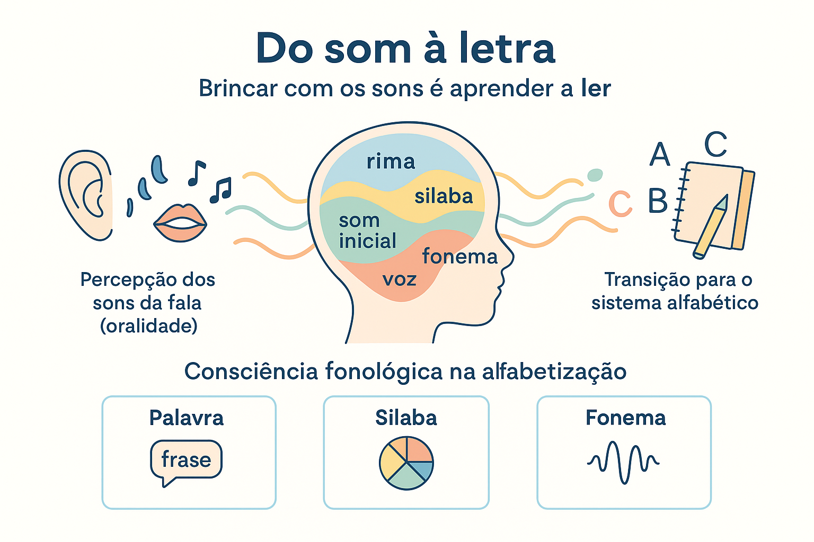

Consciência Fonológica: o som como base da alfabetização
A consciência fonológica é a habilidade de perceber e manipular os sons que compõem as palavras. Trata-se de um dos pilares da alfabetização, pois antes de compreender o valor das letras e da escrita, a criança precisa entender que as palavras são formadas por partes sonoras menores — sílabas, rimas e fonemas. O desenvolvimento dessa percepção sonora antecede e sustenta o processo de leitura e escrita.